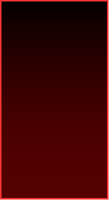
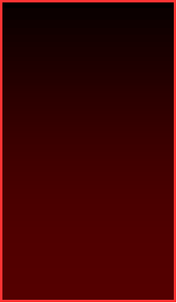
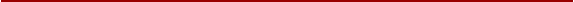

|
Buttons: more about me, projects, BYI |


|
(image goes here) |
|
I’m a lost little thing,, I’m always trying to find the right crowd to be around, but it’s hard to act “human” with all the disorders that I have :,-3 |
|
Please don’t talk to me at all if you’re one of these things: |
|
I’m very open-minded to new ideas, but I’m not tolerant of any sort of harassment (unless you’re in the groups listed there) |
|
I have ASD and ADHD and I’m very anxious unless I’m with a trusted person. I’m terribly disabled and mentally ill, but I don’t mention my other disabilities unless I’m very comfortable. There’s a lot of drama in disability spaces so I’d like to stay away from that |
|
Stuff I like :] |